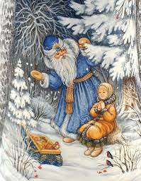
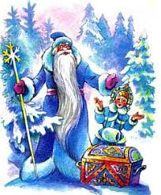

1 / 3

Caption Text
2 / 3

Caption Two
3 / 3

Caption Three
Живало-бывало, – жил дед да с другой женой. У деда была дочка и у бабы была дочка. Все знают, как за мачехой жить: перевернешься – бита и недовернешься – бита. А родная дочь что ни сделает – за все гладят по головке: умница. Сказка Морозко - картинка 1 Падчерица и скотину поила-кормила, дрова и воду в избу носила, печь топила, избу мела еще до свету… Ничем старухе не угодить – все не так, все худо. Ветер хоть пошумит, да затихнет, а старая баба расходится – не скоро уймется. Вот мачеха и придумала падчерицу со свету сжить. – Вези, вези ее, старик, – говорит мужу, – куда хочешь, чтобы мои глаза ее не видали! Вези ее в лес, на трескучий мороз. Сказка Морозко - картинка 2 Старик затужил, заплакал, однако делать нечего, бабы не переспоришь. Запряг лошадь: – Садись, милая дочь, в сани. Повез бездомную в лес, свалил в сугроб под большую ель и уехал. Девушка сидит под елью, дрожит, озноб ее пробирает. Вдруг слышит – невдалеке Морозко по елкам потрескивает, с елки на елку поскакивает, пощелкивает. Очутился на той ели, под которой девица сидит, и сверху ее спрашивает: – Тепло ли тебе, девица? – Тепло, Морозушко, тепло, батюшка. Сказка Морозко - картинка 3 Морозко стал ниже спускаться, сильнее потрескивает, пощелкивает: – Тепло ли тебе, девица? Тепло ли тебе, красная? Она чуть дух переводит: – Тепло, Морозушко, тепло, батюшка. Морозко еще ниже спустился, пуще затрещал, сильнее защелкал: – Тепло ли тебе, девица? Тепло ли тебе, красная? Тепло ли тебе, лапушка? Девица окостеневать стала, чуть-чуть языком шевелит: – Ой, тепло, голубчик Морозушко! Тут Морозко сжалился над девицей, окутал ее теплыми шубами, отогрел пуховыми одеялами. Сказка Морозко - картинка 4 А мачеха по ней уж поминки справляет, печет блины и кричит мужу: – Ступай, старый хрыч, вези свою дочь хоронить! Поехал старик в лес, доезжает до того места, – под большою елью сидит его дочь, веселая, румяная, в собольей шубе, вся в золоте, в серебре, и около – короб с богатыми подарками. Сказка Морозко - картинка 5 Старик обрадовался, положил все добро в сани, посадил дочь, повез домой. А дома старуха печет блины, а собачка под столом: – Тяф, тяф! Старикову дочь в злате, в серебре везут, а старухину замуж не берут. Старуха бросит ей блин: – Не так тявкаешь! Говори: «Старухину дочь замуж берут, а стариковой дочери косточки везут…» Собака съест блин и опять: – Тяф, тяф! Старикову дочь в злате, в серебре везут, а старухину замуж не берут. Старуха блины ей кидала и била ее, а собачка – все свое… Вдруг заскрипели ворота, отворилась дверь, в избу идет падчерица – в злате-серебре, так и сияет. А за ней несут короб высокий, тяжелый. Сказка Морозко - картинка 6 Старуха глянула и руки врозь… – Запрягай, старый хрыч, другую лошадь! Вези, вези мою дочь в лес да посади на то же место… Старик посадил старухину дочь в сани, повез ее в лес на то же место, вывалил в сугроб под высокой елью и уехал. Старухина дочь сидит, зубами стучит. А Морозко по лесу потрескивает, с елки на елку поскакивает, пощелкивает, на старухину дочь поглядывает: Сказка Морозко - картинка 7 – Тепло ли тебе, девица? А она ему: – Ой, студено! Не скрипи, не трещи, Морозко… Морозко стал ниже спускаться, пуще потрескивать, пощелкивать: – Тепло ли тебе, девица? Тепло ли тебе, красная? – Ой, руки, ноги отмерзли! Уйди, Морозко… Еще ниже спустился Морозко, сильнее приударил, затрещал, защелкал: – Тепло ли тебе, девица? Тепло ли тебе, красная? – Ой, совсем застудил! Сгинь, пропади, проклятый Морозко! Сказка Морозко - картинка 8 Рассердился Морозко да так хватил, что старухина дочь окостенела. Чуть свет старуха посылает мужа: – Запрягай скорее, старый хрыч, поезжай за дочерью, привези ее в злате-серебре… Старик уехал. А собачка под столом: – Тяф! Тяф! Старикову дочь женихи возьмут, а старухиной дочери в мешке косточки везут. Сказка Морозко - картинка 9 Старуха кинула ей пирог: – Не так тявкаешь! Скажи: «Старухину дочь в злате-серебре везут…» А собачка – все свое: – Тяф, тяф! Старухиной дочери в мешке косточки везут… Заскрипели ворота, старуха кинулась встречать дочь. Рогожу отвернула, а дочь лежит в санях мертвая. Заголосила старуха, да поздно. Сказка Морозко (Афанасьев) У мачехи была падчерица да родная дочка; родная что ни сделает, за все ее гладят по головке да приговаривают: «Умница!» А падчерица как ни угождает - ничем не угодит, все не так, все худо; а надо правду сказать, девочка была золото, в хороших руках она бы как сыр в масле купалась, а у мачехи каждый день слезами умывалась. Что делать? Ветер хоть пошумит, да затихнет, а старая баба расходится - не скоро уймется, все будет придумывать да зубы чесать. И придумала мачеха падчерицу со двора согнать: - Вези, вези, старик, ее куда хочешь, чтобы мои глаза ее не видали, чтобы мои уши о ней не слыхали; да не вози к родным в теплую хату, а во чисто поле на трескун-мороз! Старик затужил, заплакал; однако посадил дочку на сани, хотел прикрыть попонкой - и то побоялся; повез бездомную во чисто поле, свалил на сугроб, перекрестил, а сам поскорее домой, чтоб глаза не видали дочерниной смерти. Осталась бедненькая одна в поле, трясется и тихонько молитву творит. Приходит Мороз, попрыгивает, поскакивает, на красную девушку поглядывает: - Девушка, девушка, я Мороз красный нос! - Добро пожаловать, Мороз. Знать, бог тебя принес по мою душу грешную. Мороз хотел ее тукнуть и заморозить; но полюбились ему ее умные речи, жаль стало! Бросил он ей шубу. Оделась она в шубу, поджала ножки, сидит. Опять пришел Мороз красный нос, попрыгивает, поскакивает, на красную девушку поглядывает: - Девушка, девушка, я Мороз красный нос! - Добро пожаловать, Мороз. Знать, бог тебя принес по мою душу грешную. Мороз пришел совсем не по душу, он принес красной девушке сундук высокий да тяжелый, полный всякого приданого. Уселась она в шубке на сундучке, такая веселенькая, такая хорошенькая! Опять пришел Мороз красный нос, попрыгивает, поскакивает, на красную девушку поглядывает. Она его приветила, а он ей подарил платье, шитое и серебром и золотом. Надела она его и стала такая красавица, такая нарядница! Сидит и песенки попевает. А мачеха по ней поминки справляет; напекла блинов. - Ступай, муж, вези хоронить свою дочь. Старик поехал. А собачка под столом: - Тяв, тяв! Старикову дочь в злате, в серебре везут, а старухину женихи не берут! - Молчи, дура! На блин, скажи: старухину дочь женихи возьмут, а стариковой одни косточки привезут! Собачка съела блин да опять: - Тяв, тяв! Старикову дочь в злате, в серебре везут, а старухину женихи не берут! Старуха и блины давала, и била ее, а собачка все свое: - Старикову дочь в злате, в серебре везут, а старухину женихи не возьмут! Скрипнули ворота, растворилися двери, несут сундук высокий, тяжелый, идет падчерица - панья паньей сияет! Мачеха глянула - и руки врозь! - Старик, старик, запрягай других лошадей, вези мою дочь поскорей! Посади на то же поле, на то же место. Повез старик на то же поле, посадил на то же место. Пришел и Мороз красный нос, поглядел на свою гостью, попрыгал-поскакал, а хороших речей не дождался; рассердился, хватил ее и убил. - Старик, ступай, мою дочь привези, лихих коней запряги, да саней не повали, да сундук не оброни! А собачка под столом: - Тяв, тяв! Старикову дочь женихи возьмут, а старухиной в мешке косточки везут! - Не ври! На пирог, скажи: старухину в злате, в серебре везут! Растворились ворота, старуха выбежала встретить дочь, да вместо ее обняла холодное тело. Заплакала, заголосила, да поздно!